Chapter 7 Confidence intervals for univariate data
7.1 Introduction
- How to calculate a standard error
- The difference between the standard error and the standard deviation
- The concept underlying the sampling distribution of the mean
- The use of the t-distribution for small (n<30) samples
- How to calculate a confidence interval
- The logic underlying statistical inference from samples
We will load some data into R and just work with a single variable called LShell. This is a vector of mussel shell lengths.
d<-read.csv("https://tinyurl.com/aqm-data/mussels.csv")
attach(d)7.2 Reminder: Basic statistics
7.3 Measures of central tendency
7.3.0.1 The median
Measures of central tendency are useful summaries of a variable that should already be familiar. They are often referred to as ``average’’ values. There are two main measures we can use. The mean and the median.
The median is the value in the middle of the sorted data. Once the data are placed in order, a reasonable way to find the centre would be to locate the middle ranked value.
In the case of an odd number of observations finding the middle is obvious. Say, the numbers are 3,5,6,7,9,: The median is 6
There is a slight problem in the case of an even number of observations. To see this think about four numbers, say 3,5,7,9 .The middle number isn’t either the second (5), nor the third (7). We take the mean of the two.
- If n is odd:The median is the number with the rank (n+1)/2
- If n is even we take the mean of the numbers with ranks n/2 and n/2 +1
median(Lshell)## [1] 106.97.3.0.2 The mean
Finding the value of the mean in R is easy. Just type mean.
mean(Lshell)## [1] 106.835The equation for calculating a mean is written.
\(\bar{x}=\frac{1}{n}\sum_{i=1}^{n}x_{i}\)
In words, this says “Add up all the numbers and divide by the number of entries”.
To find n we ask R for the length of the vector.
n<-length(Lshell)
n## [1] 113Now we can get the total using sum.
Total<-sum(Lshell)
Total## [1] 12072.35So the mean is the total over n.
Mean<-Total/n
Mean## [1] 106.835If you have followed this calculation in R you should be able to use the same technique to break down some more complex equations. However R has built in functions for everything you ever need to calculate, so there is never any need to calculate any statistics step by step except the improve your own understanding of the logic.
7.3.1 Measures of variability
7.3.1.1 Range
The range is simply the distance between the maximum and minimum values.
min(Lshell)## [1] 61.9max(Lshell)## [1] 132.55max(Lshell)-min(Lshell)## [1] 70.657.3.1.2 Quantiles
The median is a specific example of a quantile. Quantiles are points taken at regular intervals from the cumulative distribution function (CDF) of a random variable. In other words they divide ordered data into q equal-sized data subsets.
The 2-quantile is called the median
If the data are split into 4-quantiles they are called qua tiles (Notice that quartiles is spelt with an R rather than an N)
If the data are split into 10-quantiles they are called deciles
Another general term is percentiles.
These are calculated in the same way depending on where the breaks fall. To get the qua tiles in R write
summary(Lshell)## Min. 1st Qu. Median Mean 3rd Qu. Max.
## 61.9 97.0 106.9 106.8 118.7 132.6At this point you should look back to boxplots. How do these numbers relate to the elements shown? The boxplot uses quartiles. How?
The line in the centre of a boxplot shows the median. The box extends to the quartiles, so that it includes 50% of the data. The whiskers extend to the farthest data point that is not considered to be an outlier. Points beyond the whiskers may be outliers (we will see more about this later).
More generally you can specify the specific quantiles you want to find.
quantile(Lshell,c(2.5,5,95,97.5)/100)## 2.5% 5% 95% 97.5%
## 76.04 80.74 128.16 130.827.3.1.3 The standard deviation
The standard deviation is the most commonly used summary of total variability of a sample. In words, we calculate the standard deviation by subtracting the mean from each value, squaring the result and then adding up these values in order to find the sum of squares. We then divide by n-1 and take the square root.
There is a slight complication regarding the standard deviation. When we collect our data we usually only obtain a sample from a larger population of observations we could have made. The procedures that fall under the heading of statistical inference attempt to estimate the properties of this larger (maybe even infinite) population from the sample we have taken from it. There is therefore a difference between the population standard deviation, that we rarely can ever know, and the sample standard deviation that we can calculate directly. The population standard deviation is given the symbol \(\sigma\) and the sample deviation the symbol s.
The formula for the sample standard deviation s that is an``unbiased estimator’’ of \(\sigma\) is
\(\sigma=sqrt{\frac{1}{n-1}}\sum_{i=1}^{n}(\tilde{x}-x_{i})\)\(^{2}\)
The steps in calculating s are as follows. First the sum of the squared deviations from the mean. Notice that if we did not square the deviations they would sum to zero.
Notice that in R the <- operator assigns the result of a calculation to a variable. This can be useful if you wish to perform more calculations on the result. Writing the name of the variable prints out its value.
sumsquare<-sum((Lshell-Mean)^2)
sumsquare## [1] 24678.04Now find the mean square.
meansquare<-sumsquare/(n-1)
meansquare## [1] 220.3397And finally the root mean square.
rootmeansquare<-sqrt(meansquare)
rootmeansquare## [1] 14.84384The mean square is also known as the variance and the root mean square is the standard deviation. We can check that they are the same.
meansquare## [1] 220.3397var(Lshell)## [1] 220.3397rootmeansquare## [1] 14.84384sd(Lshell)## [1] 14.843847.3.2 The normal distribution
One of the main motivations for calculating the standard deviation is that if the observations form a symmetrical normal distribution we can predict where the bulk of the observations will lie if we know the mean and the standard deviation.
A normal distribution is shown below
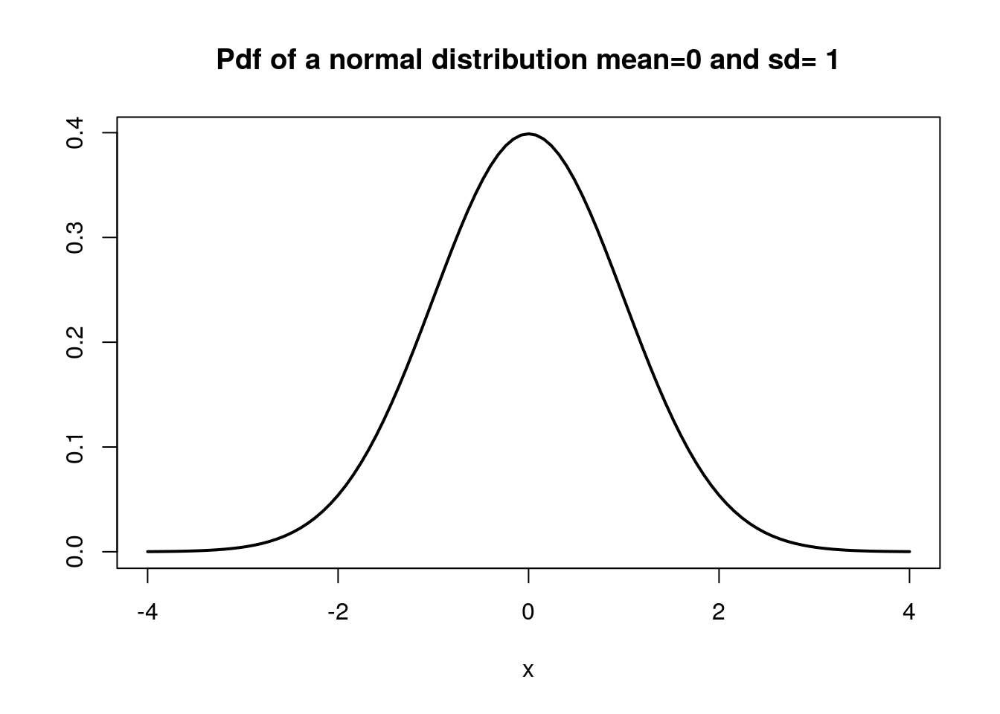
If we shade in the area that extends out from the mean to a distance of one standard deviation we will have shaded in 68% of the area under the curve (Figure 4). So if (and this is often a big if) we are justified in assuming that the data were obtained from an approximately normal distribution we have a useful summary of the population in the form of the mean and the standard deviation.
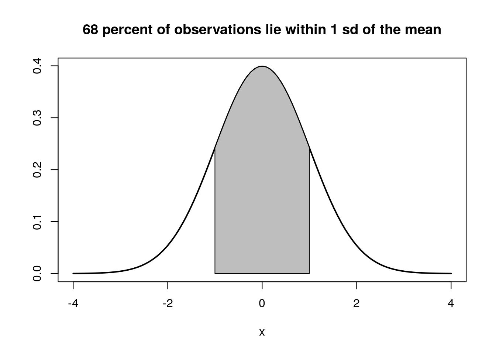

You should read more details regarding the properties of the normal distribution in Crawley.
7.3.3 Checking data properties with figures
Both boxplots and histograms are very useful tools for checking whether the data values in a variable are approximately normally distributed. A normal distribution results in a more or less symmetrical histogram if the sample is large. If the sample is small the histogram is unlikely to be completely symmetrical as a result of sampling effects, even if the sample is taken from a population with an approximately normal distribution. Always be very careful when interpreting small samples.
The whiskers of a boxplot extend (more or less) to the extreme that would be expected under a normal distribution. If there are many outliers beyond this point it is a good indication that the normal distribution may not be a good fit to the data, especially if all the outliers fall on one side. For example, lets see what some intentionally skewed data look like as a histogram and boxplot.
x<-rlnorm(100,mean=2,sd=1.2)
hist(x)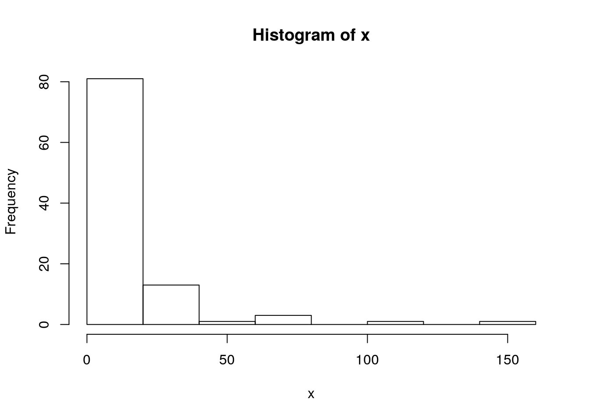
boxplot(x)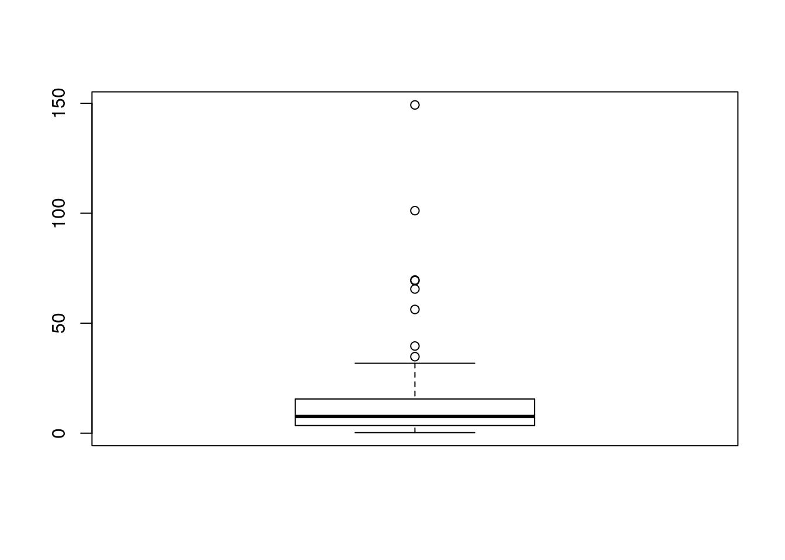
A few outliers are to be expected in all data sets. They may be genuine “errors” or they may turn out to be the most interesting elements of the data. However in this case there is clear visual evidence of skew.
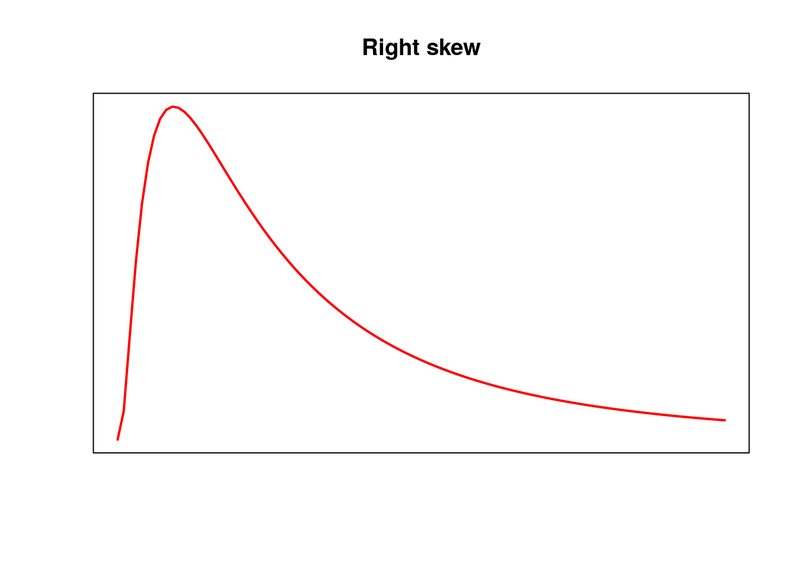
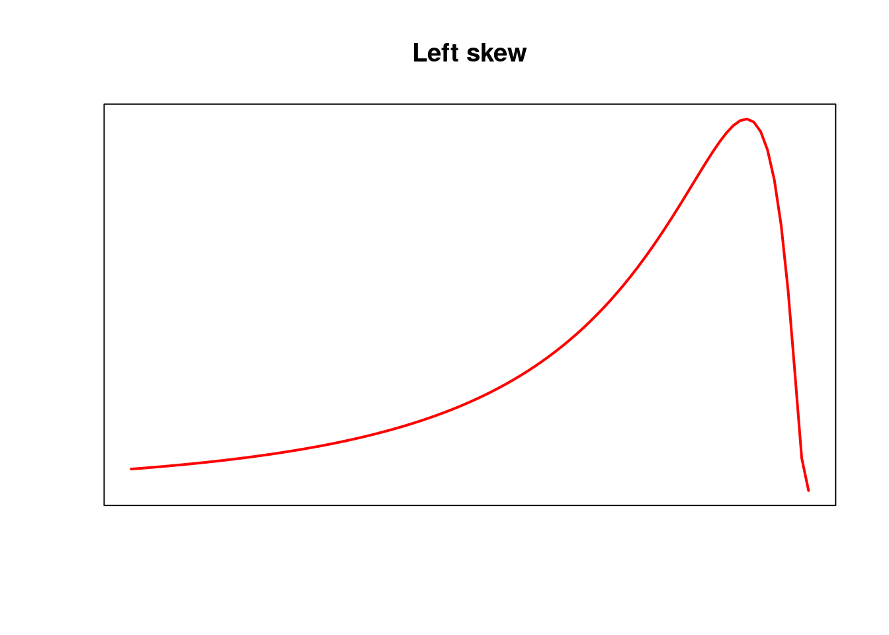
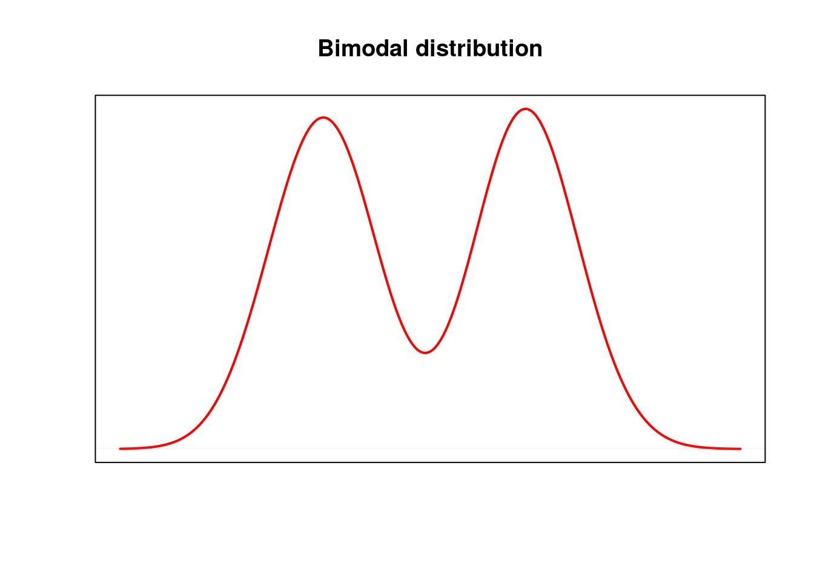
Histograms and boxplots are good starting points for getting a feel for how the variability in data is distributed. There are other more sophisticated techniques for looking at data distributions and checking modelling assumptions that we will look at in detail later.
7.3.4 Calculating the standard error
The standard deviation summarises the variability in the data (the deviations from the mean) in one single value. This can be very useful for descriptive purposes.
A rather more subtle concept is the standard error. The subtlety arises because the standard error is used for inference. Remember that statistical inference involves estimating some properties of the population from which our sample has been drawn. The standard error (of the mean) provides us with information regarding the confidence we can place on the estimate of the population mean.
The standard error is very easily calculated if we already have the sample standard deviation. It is simply the standard deviation divided by the square root of the sample size.
\(SE_{\tilde{x}}=\frac{s}{\sqrt{n}}\)
n<-length(Lshell)
se<-sd(Lshell)/sqrt(n)
se## [1] 1.396391However the interpretation of the standard error is more subtle. The standard error is based on the concept of the sampling distribution. It is in effect the standard deviation of the distribution of the means we would get if we continually drew many new samples from a target population.
7.3.5 The sampling distribution of the mean
The sampling distribution of the mean is the distribution that you would obtain if you took a large number of samples of the same size as the one you actually obtained and looked at the distribution of all the mean values.
To make this clearer let’s try a simple experiment.
In R we can draw random samples from a column of data easily. Lets take a sample of 10 mussel shells at random, look at their lengths and calculate the mean.
samp<-sample(Lshell,10)
samp## [1] 93.9 106.0 118.9 76.6 124.3 127.7 121.5 105.5 99.6 116.7mean(samp)## [1] 109.07We could repeat this experiment many times. You could do it again by repeating the code.
samp<-sample(Lshell,10)
samp## [1] 91.5 102.8 108.2 94.9 121.5 125.9 97.0 99.5 103.3 101.8mean(samp)## [1] 104.64You can see that the result is not the same, as the sample was taken at random.
We can tell R to take 1000 samples like this from the original vector, calculate the mean from each and then look at the distribution of all the resulting thousand values. This would simulate the spread in values for the mean that we would obtain if we carried out a lot of small surveys that took only 10 mussel shells from the same population
resamp<-replicate(1000,mean(sample(Lshell,10)))
hist(resamp,breaks=20,xlim=c(90,120),main="Sampling distribution of the means of 10 shells")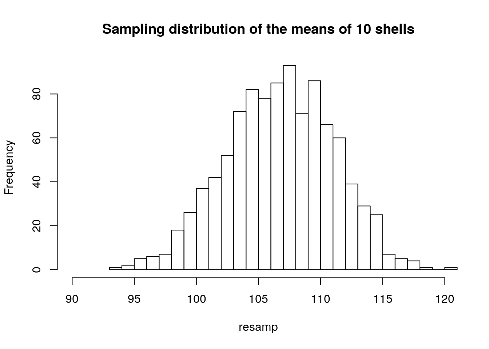
Now if we draw samples of 30 shells instead of 10 and calculate the mean for each, what would we expect? Let’s try this and plot the result.
resamp<-replicate(1000,mean(sample(Lshell,30)))
hist(resamp,breaks=25,xlim=c(90,120),main="Sampling distribution of the means of 30 shells")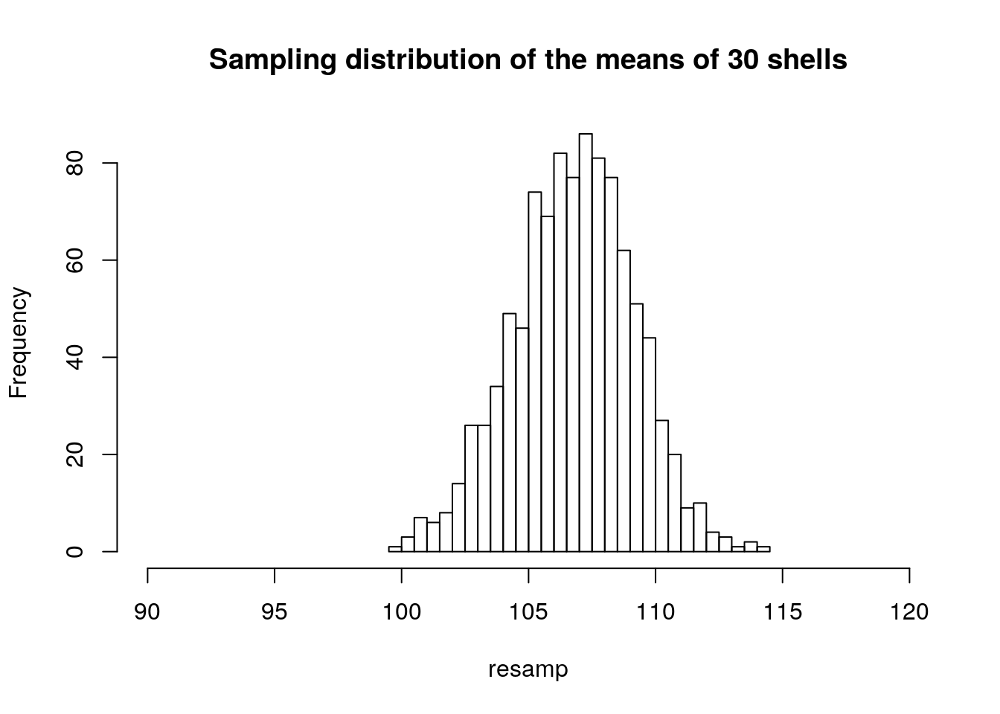
A sample size of 50 should reduce the spread of mean values still further.
resamp<-replicate(1000,mean(sample(Lshell,50)))
hist(resamp,breaks=40,xlim=c(90,120),main="Sampling distribution of the means of 50 shells")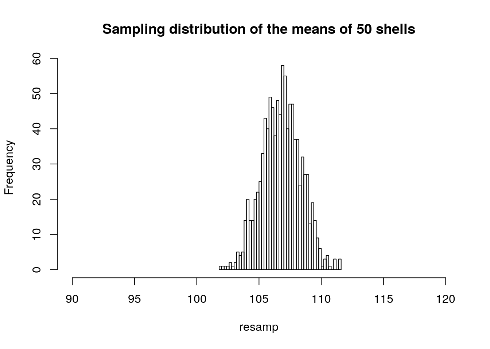
Notice that in all cases the histogram suggests a symmetrical, normal distribution. The distribution becomes narrower as the sample size increases.
So the outcome of all this is to demonstrate that the standard error is a manner of formalising this so called ``sampling’’ process mathematically. It provides a measure of the confidence we have in an estimate of the mean value calculated from our sample.
For large samples, a 95% confidence interval for the mean is produced by multiplying the standard error by approximately 2 (the precise value is 1.96 for infinitely large samples). We expect the true mean for the population to fall within this interval 95% of the time. Notice that this is not a measure of variability (there is only one true mean). It is an estimate of a parameter expressed with uncertainty. So there is a very important distinction between the standard deviation and the standard error.. The standard error changes with sample size. The standard deviation does not (although the estimated standard deviation may change slightly at low sample sizes)
To reiterate. We can reduce the standard error by increasing the sample size, as we divide by the square root of n. However we can’t reduce the standard deviation by drawing a larger sample. The sd is a measure of the natural variability which is always present. All that happens to the standard deviation when we take a small sample is that we have a worse estimate of it, as the differences between individuals may vary randomly depending on which we happen to pick.
Recall the way we simulated some artificial data in R. To get each simulated height we used the mean + the simulated variability with known standard deviation
mean<-176 #This is the "expected value" for the population
variability<-rnorm(1,sd=6) #Each measurement will differ from the mean
height<-mean+variability #The values we get are a combination of the twoThe intrinsic variability is often referred to as the “error” in statistics, but it this is not necessarily an error in the colloquial sense of a “mistaken” measurement. The true population mean is fixed, it does not vary. However our estimate of it does, unless we measure every individual in the population. We draw inferences about it from the sample. This is the basis of many classical statistical tests.
7.3.6 Calculating confidence intervals
Whenever you see a standard error in the published literature remember that the rough rule of thumb is that two standard errors represent a 95% confidence interval for the mean. However it is only a rough estimate. As samples become smaller you need to multiply the standard error by a larger value.
Small sample (n<30) inference relies on the t distribution. The t-distribution is wider than the normal distribution and corrects for the fact that we have to estimate the population standard deviation from the sample.
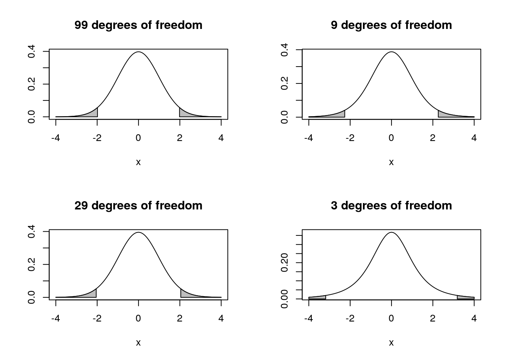
The t distribution becomes “fatter” as the sample size becomes smaller (degrees of freedom = n-1) so we need to multiply the SE by a larger value in order to obtain the same confidence interval. Notice that small samples therefore lead to a “double whammy”. The SE is large because n is in the denominator when we calculate it from the sd, and the value for t is larger because we have a worse estimate of the standard deviation from the sample.
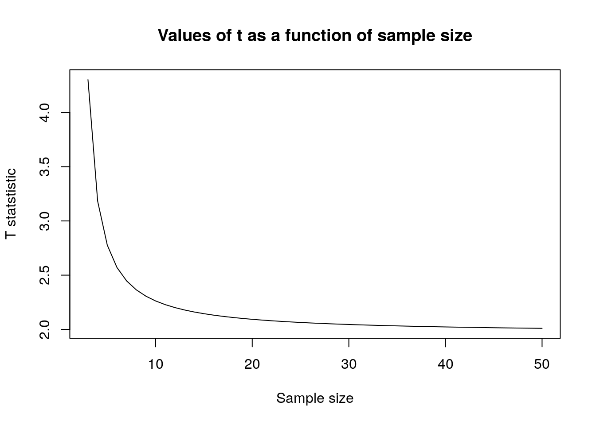
Notice as well that with sample sizes of above 10 the adjustment is not very great, and once the sample size reaches 30 the adjustment flattens out and hovers at a value just over 1.96, which it will eventually reach at a sample size of infinity. Hence the approximate, but generally appropriate, statement that the confidence interval is more or less 2 standard errors around the mean. It is only really importantly larger than this if the sample size is below 10.
So to get a 95% confidence interval with a sample of size 10 we multiply the standard error by t as found by the R function below, instead of using 1.96 which would be the case for a large sample.
t<-qt(0.975,10-1)
t## [1] 2.262157This cuts off the tails of the t-distribution.
To calculate a confidence interval step by step in order to illustrate the concept we need the following elements.
SD<-sd(Lshell)
SD## [1] 14.84384Mean<-mean(Lshell)
Mean## [1] 106.835n<-length(Lshell)
n## [1] 113SE<-SD/sqrt(n)
SE## [1] 1.396391t<-qt(0.975,n-1)
t## [1] 1.981372The confidence interval is then calculated using the standard error of the mean and the value for t that corresponds to the cut off point of the distribution.
Mean-SE*t ## [1] 104.0682Mean+SE*t ## [1] 109.6017See Crawley, chapter 4 for more details.
To get a confidence interval in one step using R we can run a one sample t-test.
t.test(Lshell)##
## One Sample t-test
##
## data: Lshell
## t = 76.508, df = 112, p-value < 2.2e-16
## alternative hypothesis: true mean is not equal to 0
## 95 percent confidence interval:
## 104.0682 109.6017
## sample estimates:
## mean of x
## 106.835The output also shows the result of testing the null hypothesis that the true mean is actually zero. This is not a sensible test in this case but we can just ignore the ``test’’ part of the output and look at the confidence interval that has been calculated for us.
The code below also finds the confidence interval. It involves fitting a simple statistical model. You will see why this works later in the course.
confint(lm(Lshell~1))## 2.5 % 97.5 %
## (Intercept) 104.0682 109.60177.4 Conclusion and take home messages
While it is good to know how the mathematical mechanism works,in order to design a study you only really need to remember the following rules.
- The sample standard deviation provides an estimate of the true population sample deviation. The standard deviation is root mean squared error of the deviations from the mean.
- The standard error of the sampling mean is the standard deviation divided by the square root of the sample size.
- The t distribution corrects for the fact that the sample standard deviation is only an estimate of the true value and so adds in a “fudge factor” that increases the width of the 95% confidence interval to be more than two standard errors around the mean.
- The t distribution adjustment is not very large once the sample size is greater than 10.
- The confidence interval shrinks to become narrower as the sample size increases, and it does so as a more or less linear function of the square root of the sample size (allowing for a correction for very small samples using the t statistic). So to reduce the width of the confidence interval by a half you need to take four times the number of samples (again, this rule applies after the sample size has reached around 10 in order to ignore the effect of the t correction)
- The reliability of the confidence interval remains unchanged at any sample size you use. What does change is the precision. Larger samples lead to narrower, hence more useful, confidence intervals. You can obtain a reliable 95% confidence interval using any sample size above 3. However it may be too broad to be useful if the sample is small.